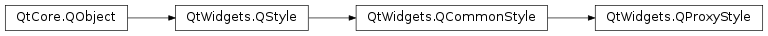

QProxyStyle¶
Synopsis¶
Functions¶
- def
baseStyle() - def
setBaseStyle(style)
Detailed Description¶
The
PySide2.QtWidgets.QProxyStyleclass is a convenience class that simplifies dynamically overridingPySide2.QtWidgets.QStyleelements.A
PySide2.QtWidgets.QProxyStylewraps aPySide2.QtWidgets.QStyle(usually the default system style) for the purpose of dynamically overriding painting or other specific style behavior.The following example shows how to override the shortcut underline behavior on any platform:
#include "textedit.h" #include <QApplication> #include <QProxyStyle> class MyProxyStyle : public QProxyStyle { public: int styleHint(StyleHint hint, const QStyleOption *option = 0, const QWidget *widget = 0, QStyleHintReturn *returnData = 0) const { if (hint == QStyle::SH_UnderlineShortcut) return 0; return QProxyStyle::styleHint(hint, option, widget, returnData); } }; int main(int argc, char **argv) { Q_INIT_RESOURCE(textedit); QApplication a(argc, argv); a.setStyle(new MyProxyStyle); TextEdit mw; mw.resize(700, 800); mw.show(); //... }Warning: The
common stylesprovided by Qt will respect this hint, because they callQStyle.proxy(), but there is no guarantee thatQStyle.proxy()will be called for user defined or system controlled styles. It would not work on a Mac, for example, where menus are handled by the operating system.See also
-
class
PySide2.QtWidgets.QProxyStyle([style=nullptr])¶ -
class
PySide2.QtWidgets.QProxyStyle(key) Parameters: - key – unicode
- style –
PySide2.QtWidgets.QStyle
Constructs a
PySide2.QtWidgets.QProxyStyleobject for overriding behavior in the specifiedstyle, or in the default nativePySide2.QtWidgets.QApplication.style()ifstyleis not specified.Ownership of
styleis transferred toPySide2.QtWidgets.QProxyStyle.Constructs a
PySide2.QtWidgets.QProxyStyleobject for overriding behavior in the base style specified by stylekey, or in the currentapplication styleif the specified stylekeyis unrecognized.See also
-
PySide2.QtWidgets.QProxyStyle.baseStyle()¶ Return type: PySide2.QtWidgets.QStyleReturns the proxy base style object. If no base style is set on the proxy style,
PySide2.QtWidgets.QProxyStylewill create an instance of the application style instead.
-
PySide2.QtWidgets.QProxyStyle.setBaseStyle(style)¶ Parameters: style – PySide2.QtWidgets.QStyleSets the base style that should be proxied.
Ownership of
styleis transferred toPySide2.QtWidgets.QProxyStyle.If style is zero, a desktop-dependant style will be assigned automatically.
© 2018 The Qt Company Ltd. Documentation contributions included herein are the copyrights of their respective owners. The documentation provided herein is licensed under the terms of the GNU Free Documentation License version 1.3 as published by the Free Software Foundation. Qt and respective logos are trademarks of The Qt Company Ltd. in Finland and/or other countries worldwide. All other trademarks are property of their respective owners.